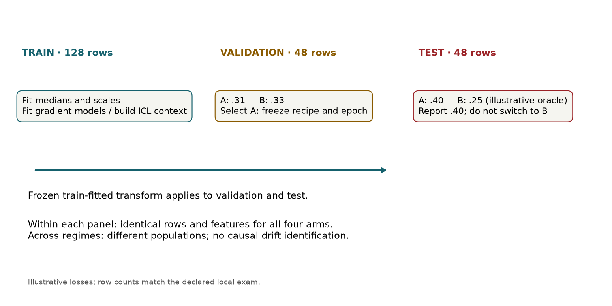
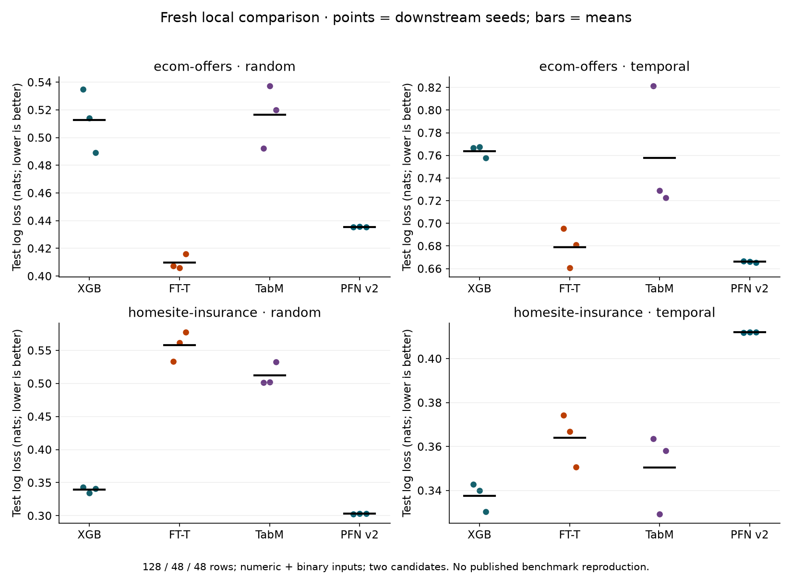

Year 2 · Quarter 4 · Lesson 080
Year 2 exit exam: defend a reproducible comparison
Start cold · defend your choices¶
Close the notes. In six short explanations, answer: Why can trees benefit from irregular targets, meaningful feature axes and irrelevant features? How does TabM train its members? What does TabPFN v2 learn before seeing your table? How does TabICL turn columns into predictions? For every mechanism, name an intervention that could expose its failure. Save your answers before opening the reference.
Your tangible win: deliver one reproducible comparison and a defensible explanation of when to stay with a single-table model. This is the gate to Year 3, not a race to a higher score. Use one session for protocol and cold recall, one for the lab, and one for interpretation and teach-back. A tie or a neural loss can earn full marks.
Lesson 79 asked you to choose a model conditionally. This exam tests whether you can turn that choice into evidence another person can reproduce. Lesson 77 then helps you explain what even the winning row model cannot recover; Lesson 78 supplies the next mechanism to investigate.
1 · Freeze the comparison before opening the test¶
A prediction-time contract states what is known when a prediction is made. A candidate is one declared model recipe. A validation split selects that recipe; a test split estimates the selected recipe's performance. An initialization seed controls downstream randomness without creating another independent dataset.
Write your intended prediction time, features, metric and selection budget into the submission template. Record a prediction about the random versus temporal comparison before viewing the author results. Explain what would change your mind.
The required four arms. Fit FT-Transformer and TabM from initialization, fit a two-candidate XGBoost baseline, and condition the frozen historical TabPFN v2 on training rows. “Train TabPFN” here means prepare its task context; it does not mean recreate its pretraining. TabICL is a required written teach-back, not an extra experimental arm.
The paired regimes. Use the same two real tasks, Ecom Offers and Homesite Insurance, under released random and chronological partitions. Within a panel all four arms receive exactly the same rows, labels and numeric/binary columns. Temporal ordering asks about later observations. It does not by itself certify historical aggregates or label availability; you must identify that remaining assumption.

The declared local budget. The complete author exam has four panels × four arms × three seeds = 48 selected evaluations. Each panel contains 128 training, 48 validation and 48 test rows. There are two candidates per arm. FT and TabM get 16 epochs with validation-selected checkpoints; XGBoost gets 120 trees. All 119 Ecom or 276 Homesite numeric/binary columns are retained. Categorical columns are omitted and counted in the evidence.
Scope check. These small caps make the complete local exam replay practical; they do not reproduce any paper benchmark. Equal candidate counts do not equalize compute, pretraining or validation adaptivity. The larger executable extension is a separate experiment. The evidence supports these two task panels, not a universal family ranking. See the complete protocol and deviation audit.
2 · Trace the boundary that prevents a false win¶
Worked example. Candidate A has validation loss .31 and test loss .40. Candidate B has validation loss .33 and test loss .25. Select A. Once you use .25 to revise the choice, that test set has become another validation set. Your selected result is .40; disappointing evidence is still evidence.
Log loss measures the probability assigned to the observed class. For a positive label, probability .8 costs −log(.8) ≈ .223 nats; probability .2 costs ≈ 1.609. For a negative label, use the probability of class zero. Average those row losses. Smaller is better. A confident wrong prediction is costly.
Four boundaries to inspect in code: fit imputation and scaling on training rows; give the trainer only training and validation inputs; select the first minimum validation loss; call the selected predictor on the locked test rows. Save predictions and labels in the same order so a second implementation can reconstruct the reported score.
FT-Transformer turns each scalar into a feature token, mixes tokens with attention, and reads a learned classification token. TabM produces several member logits using shared matrices and small member-specific adapters. Its training averages member losses; its inference averages member probabilities. TabPFN v2 applies pretrained weights to labeled context and unlabeled query rows. The context is part of the predictor, so its size, feature encoding and query batch must be reproducible. Read the full forward passes and the common trainer in the notebook, not just the wrappers.
The FT arm uses the pinned released architecture, including ReGLU and omission of the first attention normalization. It does not silently inherit the simpler GELU model from the earlier introductory FT lesson. The historical v2 arm loads all checkpoint tensors but uses a disclosed simple numeric wrapper rather than the paper's complete evaluation ensemble.
3 · Run, break, repair¶
Open the student notebook. Implement three live functions: binary log loss, first-minimum validation selection, and temperature-to-probability conversion. The fresh comparison calls your functions. The CHECK cells test invalid inputs and boundary cases, not just one happy-path number.
- Predict what a broken validation selector would do, then implement the correct one.
- Reconstruct all 48 saved test losses and every saved candidate validation loss. Verify row isolation, target identity, checkpoint selection and full coverage.
- Run the complete four-arm, two-regime smoke. This proves your live code executes. For the assessed submission set the preset to
examand run the full 48-cell comparison into a new file. - Deliberately mutate a saved test prediction, duplicate a run and overlap a train/test ID. Each must fail the audit. Repair the evidence by rerunning or restoring verified input, never by deleting an inconvenient check.
- Submit the notebook, fresh result JSON and written template. Include source, data, checkpoint and environment identities.
Scope check. A saved-prediction replay proves analysis reproducibility; it does not train a model. A fresh downstream run still does not reproduce historical pretraining. Notebook execution and automatic checks do not establish your conceptual mastery.
4 · Interpret only after committing a prediction¶
Reveal the fresh author experiment after writing your prediction
Fresh author training / frozen-v2 inference; not student output or paper-result reproduction.
| Task / regime | XGBoost | FT-Transformer | TabM | TabPFN v2 |
|---|---|---|---|---|
| ecom-offers / random | 0.513 ± 0.023 | 0.410 ± 0.006 | 0.517 ± 0.023 | 0.436 ± 0.000 |
| ecom-offers / temporal | 0.764 ± 0.005 | 0.679 ± 0.017 | 0.758 ± 0.055 | 0.666 ± 0.001 |
| homesite-insurance / random | 0.339 ± 0.005 | 0.558 ± 0.022 | 0.512 ± 0.018 | 0.303 ± 0.000 |
| homesite-insurance / temporal | 0.338 ± 0.006 | 0.364 ± 0.012 | 0.350 ± 0.018 | 0.412 ± 0.000 |
Mean ± sample SD of test log loss across three seeds. Lower is better.

Read each row as a separate held-out question. The sample standard deviation describes three downstream seeds on fixed rows. It is not a confidence interval over future tasks. Average seeds first, rank methods within each dataset, and only then average ranks with equal dataset weight. With two datasets, a population significance claim would be unjustified.
The random and temporal panels change the sampled populations and the fitted models. A reversal is descriptive evidence to investigate; it does not isolate drift as its sole cause. Inspect class balance, eligible features, sample size and selection before telling an architectural story.
5 · Write the explanation that earns the exit¶
Write 250–400 words connecting your actual result to three questions. Why does the single-table model plateau? Distinguish an information ceiling from insufficient model capacity or failed optimization. If two histories become the same row but require different labels, no deterministic row predictor can distinguish them. Where does ICL help? Explain transfer from a learned prior when labels are scarce, then discuss prior mismatch and context/prediction cost. Why investigate relational learning next? Specify one eligible historical aggregate to test before a GNN and the evidence that would justify the added complexity.
Your six cold explanations must also cover the three tree-bias interventions, TabM's loss versus prediction aggregation, and the historical TabICL pipeline: column-wise embedding, row-wise interaction and in-context prediction. A diagram label or slogan is insufficient; explain what enters each stage, what is learned, and where a query label is unavailable.
6 · Rubric and submission gate¶
Each row is scored 0 (missing/wrong), 1 (partly correct), or 2 (correct, explained and backed by the named artifact). The tutor assigns the final score; the browser only tracks whether artifacts are present.
| Criterion | Evidence for 2 points |
|---|---|
| Three biases | Explain all three mechanisms, interventions and limitations in your own words |
| TabM | Correct shared/member parameters, member-loss training and probability averaging |
| TabPFN v2 + TabICL | Correct prior/context/query boundaries and both pipelines; distinguish pretraining and downstream inference |
| Fair protocol | Both regimes, all four arms, train-only transforms and validation-only selection |
| Executable evidence | Fresh complete exam, hashes, all predictions and passing negative audits |
| Interpretation | Within-dataset uncertainty, budget caveats and no causal/population overclaim |
| Relational bridge | Distinguish information/capacity limits and propose a point-in-time aggregate test |
| Reproduction ledger | Exact commands; distinguish local training, analysis replay and unrun paper results |
Pass: at least 13/16, no zero row, and full credit on fair protocol and executable evidence. Leakage, missing required arms/regimes, or presenting author evidence as your own run blocks the exit regardless of total points. Repair the specific gap and resubmit. There is no required winning model and no required accuracy target.
Ask the tutor follow-up questions on anything unclear. Submit your artifacts for grading; the course does not advance automatically. After a pass, carry your comparison harness, row encoder and information-ceiling argument into Year 3.
Primary sources and exact scope¶
Start with Grinsztajn et al., §5 for the bias mechanisms, then review FT-Transformer, TabM v3, TabPFN v2, TabICL 2025 v2 and TabReD. These are historical course sources, not a claim about the latest model releases.
Source inventory · Measured author evidence · Reproduction contract · Printable exam reference